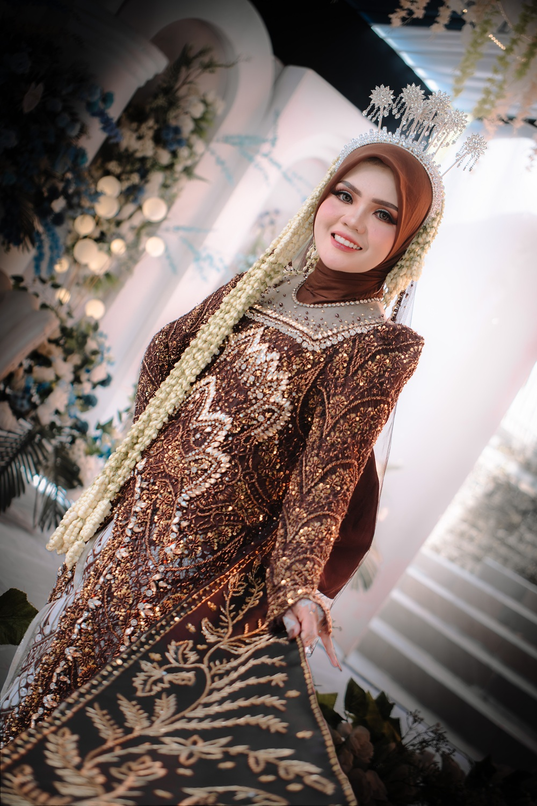
Bridal Elegance
Gak Nyoto - Gak Moto || Gak Nyoto - Gak Nyuting
Kami menangkap tawa kecil, tatapan diam, dan momen yang tak bisa diulang—dengan warna hangat dan rasa yang tetap hidup bertahun-tahun kemudian.
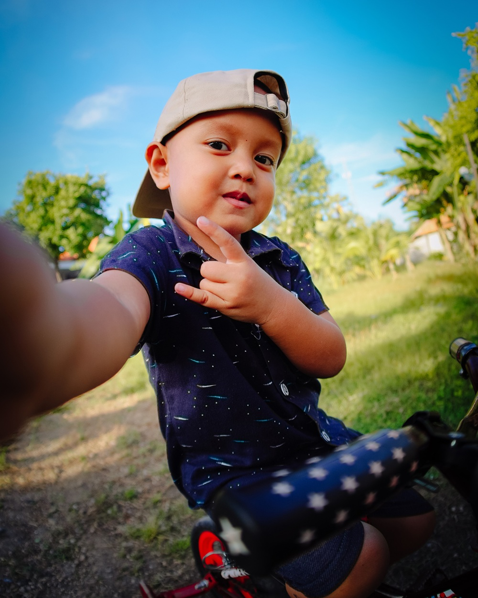
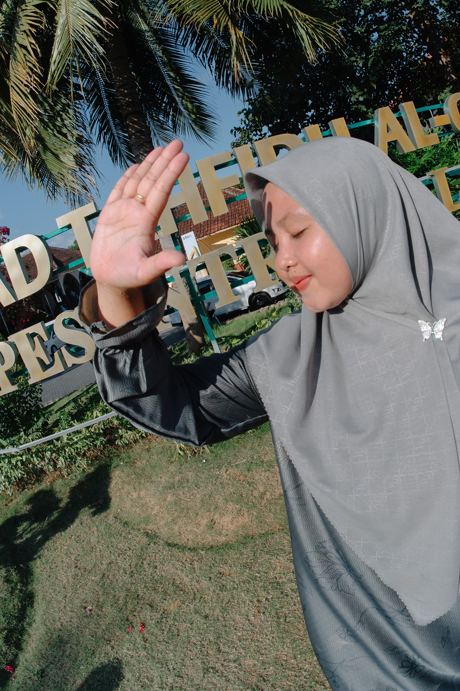
Beberapa Karya Kami
Cuplikan gaya visual MiM Shootography. Klik Instagram untuk melihat karya terbaru dan cerita lengkap setiap sesi.

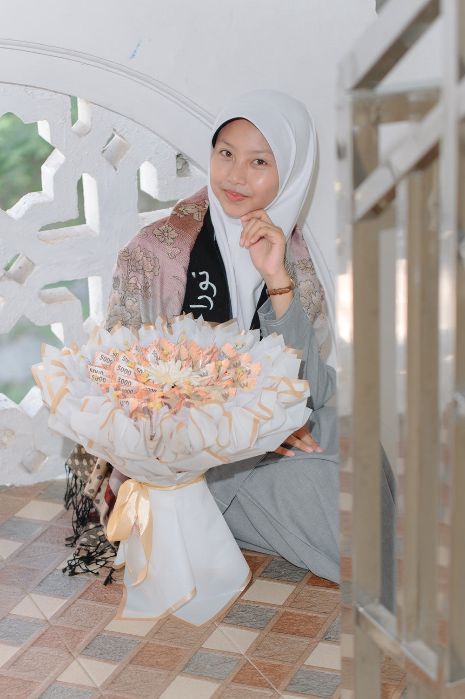
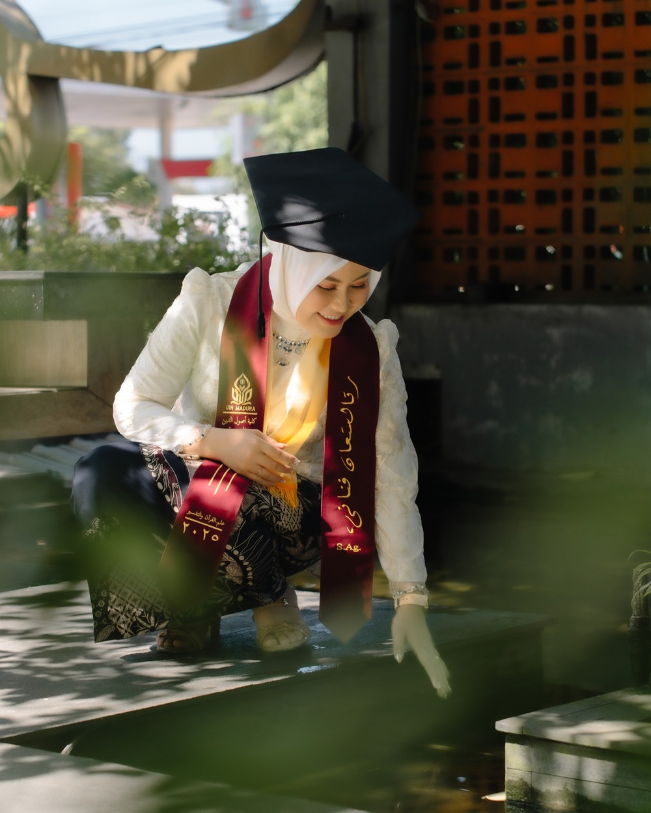

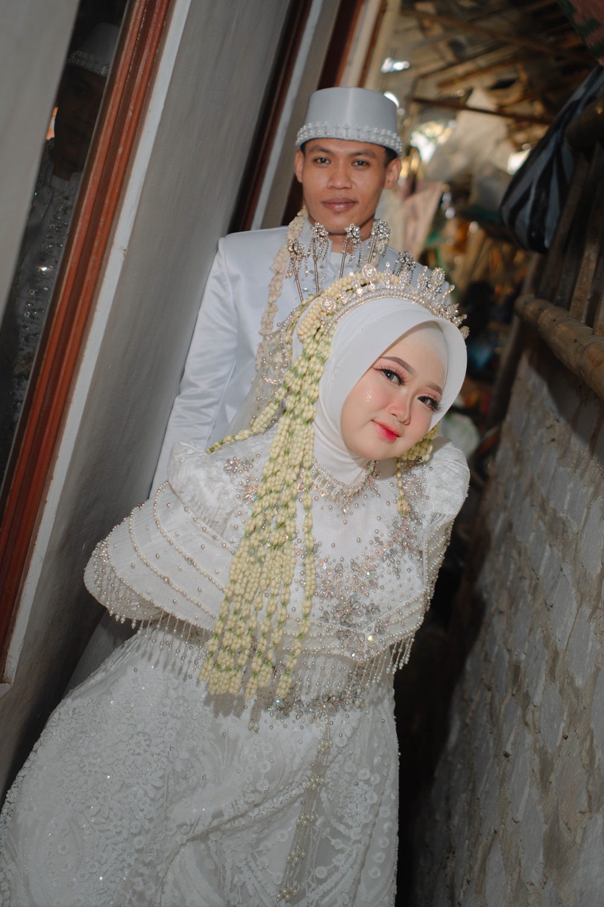

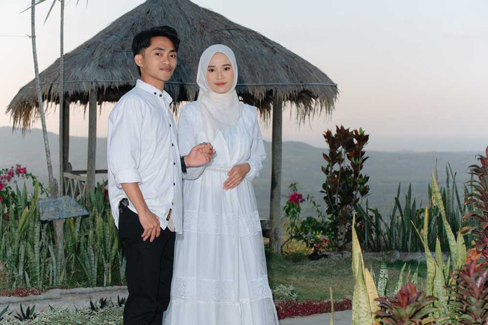
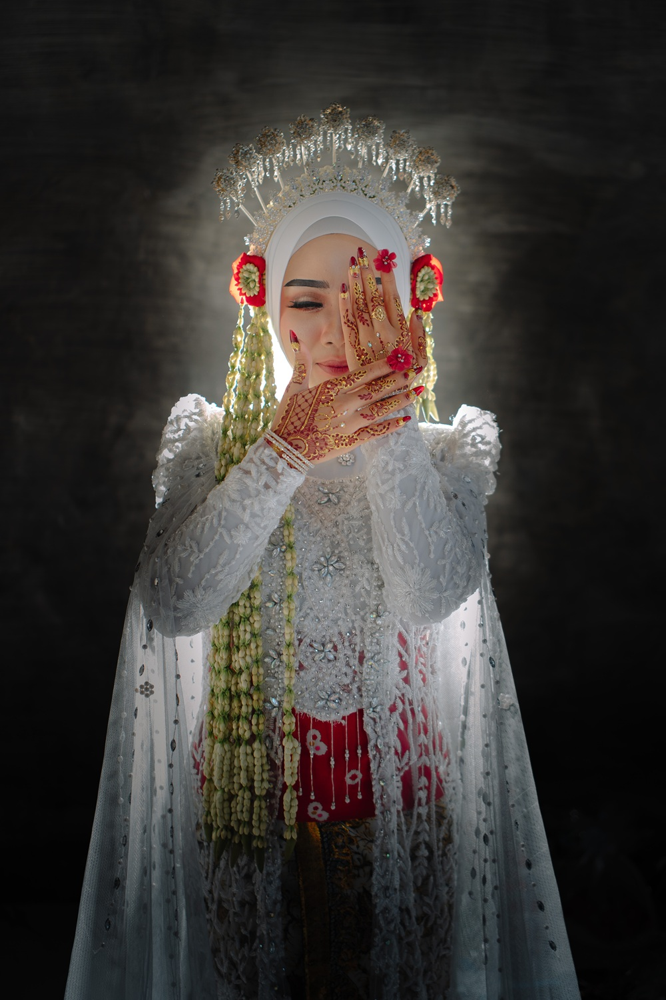
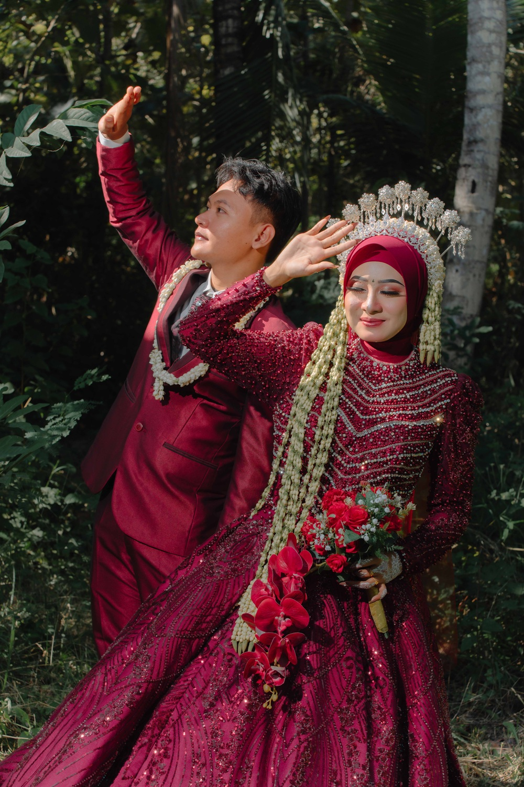
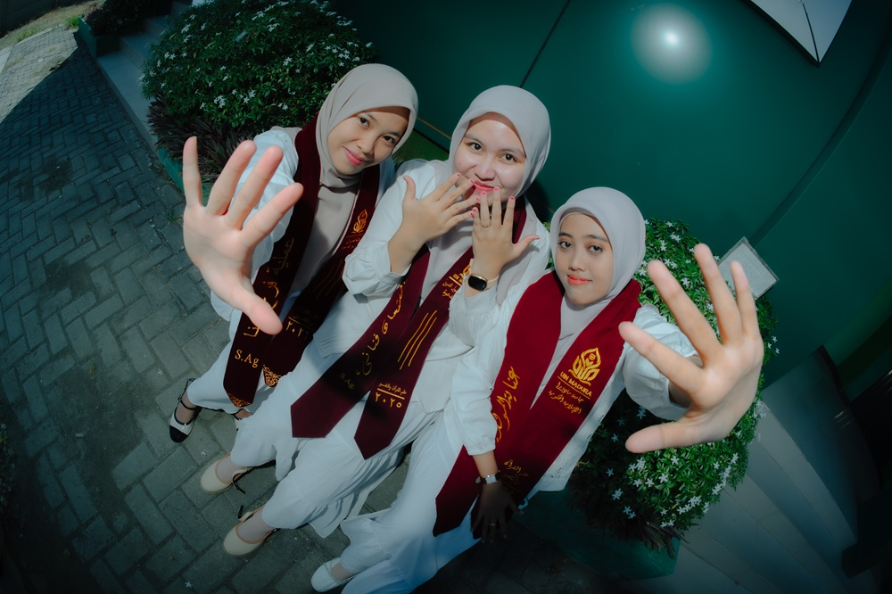
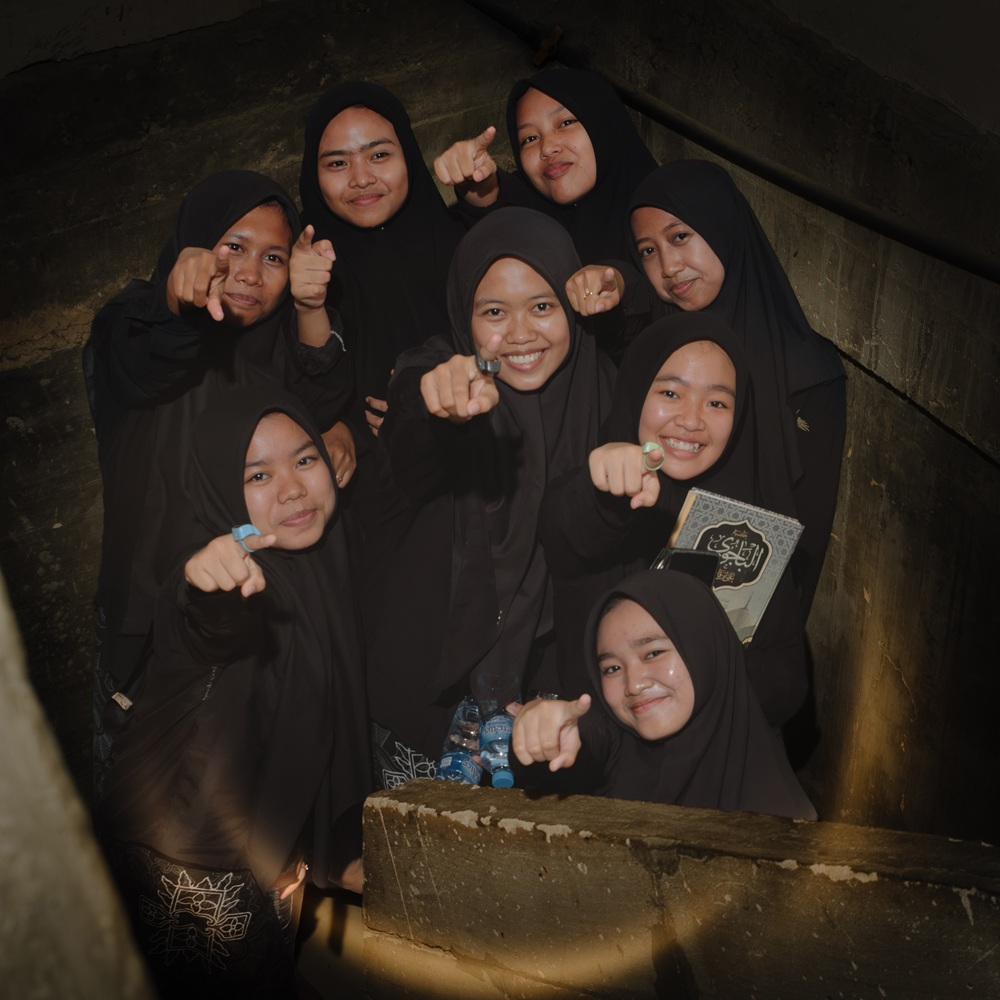
Portal digital
Satu pengalaman yang rapi untuk klien dan studio—tanpa daftar file yang berantakan.
Klien memilih foto langsung dari galeri, memberi catatan, lalu mengirim daftar final ke studio.
Terbuka untuk klien →Mencari file RAW berdasarkan daftar pilihan dan menyalinnya ke folder tujuan secara otomatis.
Khusus akun aktifMembuat tautan seleksi dengan nama klien, folder Google Drive, kuota, dan pesan WhatsApp.
Khusus akun aktifMari bercerita